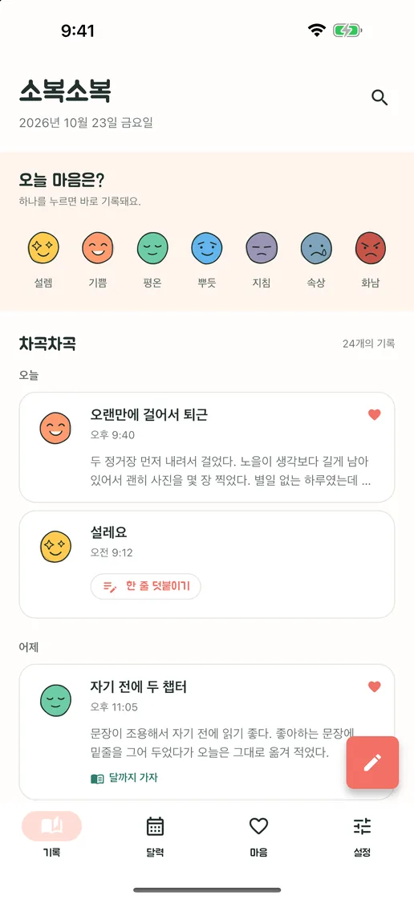
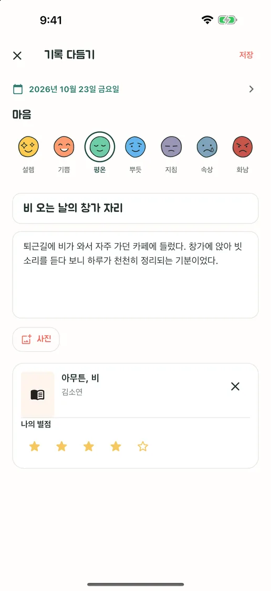
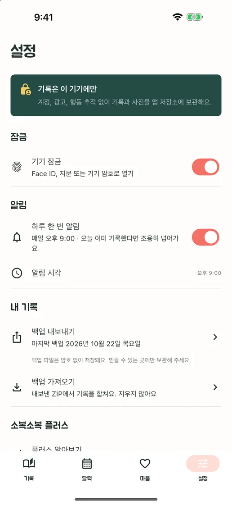
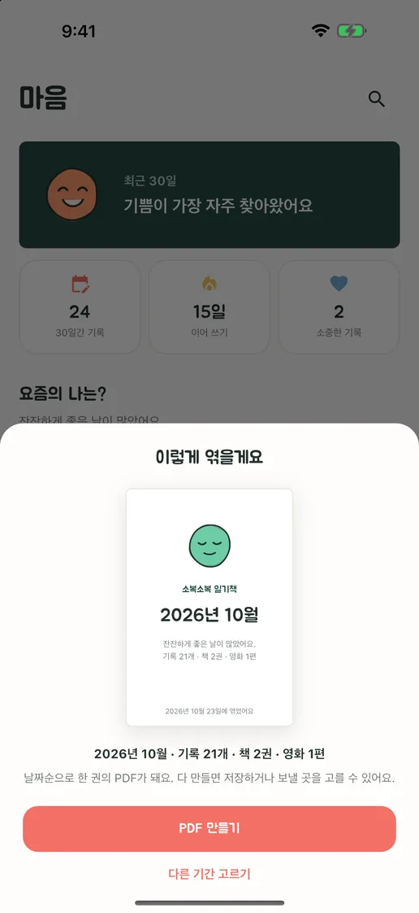
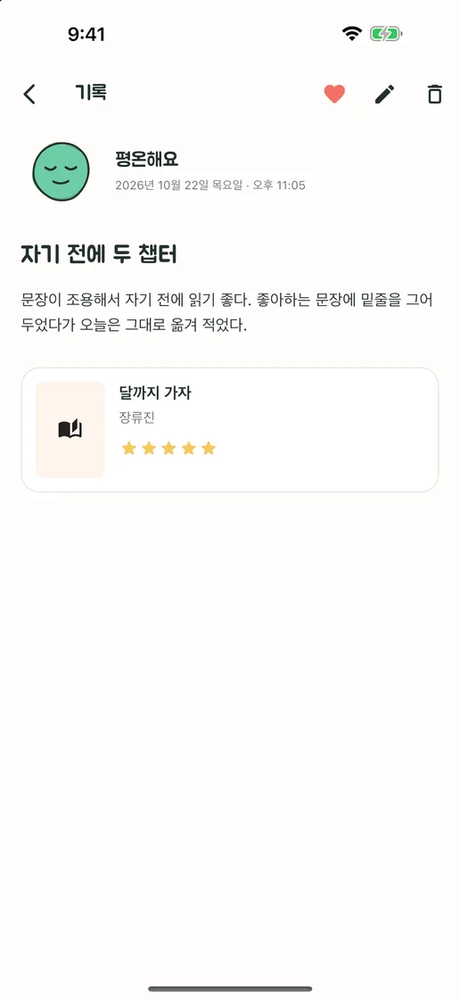
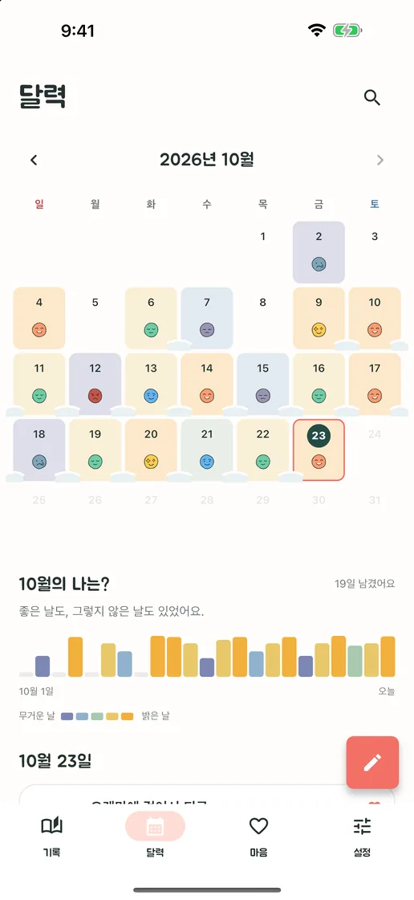
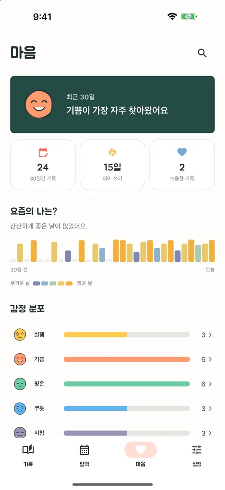

한 번 누르면 끝
일곱 가지 감정 얼굴 중 하나를 누르면 그대로 하루의 기록이 됩니다. 할 말이 생기면 그 기록에 한 줄을 바로 덧붙일 수 있어요.
감정 하나부터 책·영화 감상까지
계정도, 구독도, 광고도 없어요. 감정 하나만 눌러도 오늘이 남고, 긴 글과 사진, 책·영화 감상까지 한 기록에 담겨요. 모두 내 폰에만 저장되고 언제든 파일로 꺼낼 수 있어요.
App Store·Google Play 출시 예정무료 · 앱 내 구입 · iPhone·Android · English · Deutsch · Tiếng Việt · Español · Bahasa Indonesia · 日本語 · 简体中文 · 繁體中文 · ไทย · Português · Français · 한국어


쓰고 싶은 만큼만
쓸 말이 없는 날에는 감정 하나만 눌러도 오늘이 남습니다. 쓰고 싶은 날에는 제목과 긴 글, 사진, 방금 읽은 책이나 본 영화의 감상까지 한 기록에 담깁니다.
일곱 가지 감정 얼굴 중 하나를 누르면 그대로 하루의 기록이 됩니다. 할 말이 생기면 그 기록에 한 줄을 바로 덧붙일 수 있어요.
제목과 긴 글, 사진, 별점까지 그날 담고 싶은 만큼만 담으세요. 방금 읽은 책, 막 본 영화를 검색해 붙이고, 검색에 없으면 직접 입력할 수 있어요.
기록한 날마다 달력에 그날의 감정이 소복이 쌓이고, 이어 쓴 날들은 눈처럼 이어져요. 어떤 주가 좋았고 어떤 주가 힘들었는지 한눈에 보여요.
앱 미리보기





회원가입도, 광고도, 사용 추적도 없어요. 일기는 기기 안에만 저장되고, 전체 기록과 사진을 ZIP 파일로 내보내 새 기기에서 다시 가져올 수 있어요. 기록·검색·달력·잠금·백업은 모두 무료이고, 기록을 PDF 일기책으로 엮는 소복소복 플러스만 한 번 구매로 열려요.